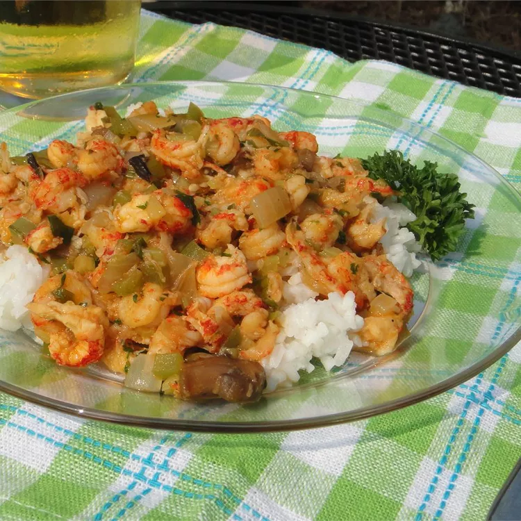

Back to Home
Crawfish Etouffee

Crawfish Etouffee - A New Orleans fav!
Crawfish is a very popular seafood in New Orleans. This recipe is a New Orleans classic that includes sauteed crawfish over a cajun sauce served over rice.
Ingredients
- 1/2 cup butter
- 1 onion, diced
- 1 green bell pepper, chopped
- 1 bunch green onions, chopped
- 2 stalks celery, chopped
- 1 (10.75 ounce) can condensed golden mushroom soup
- 3/4 cup chopped fresh parsley
- 1 teaspoon Cajun seasoning, or to taste
- salt and ground black pepper to taste
- 2 pounds crawfish tail meat
Setps
- Melt the butter in a large, heavy skillet over medium heat
- Stir in the onion, green bell pepper, green onions, and celery
- Cook the vegetables, stirring frequently, until the onion is translucent and the vegetables have begun to soften, about 10 minutes.
- Stir in the golden mushroom soup, parsley, Cajun seasoning, salt, and black pepper, and bring the sauce to a boil.
- Gently mix in the crawfish tail meat, and simmer until the crawfish tails are opaque, 10 to 15 minutes
Recipe Credit